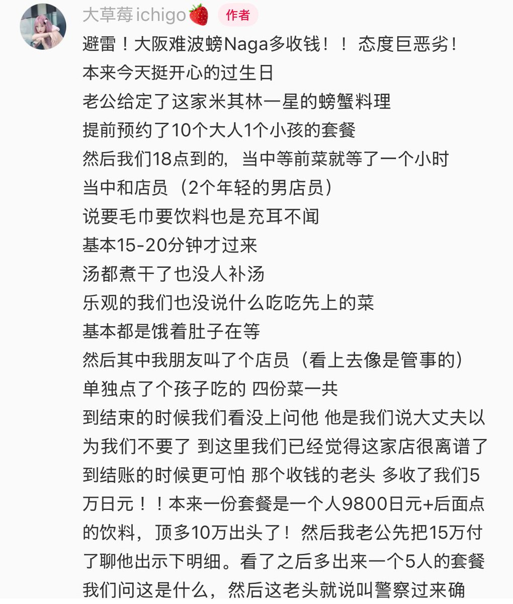
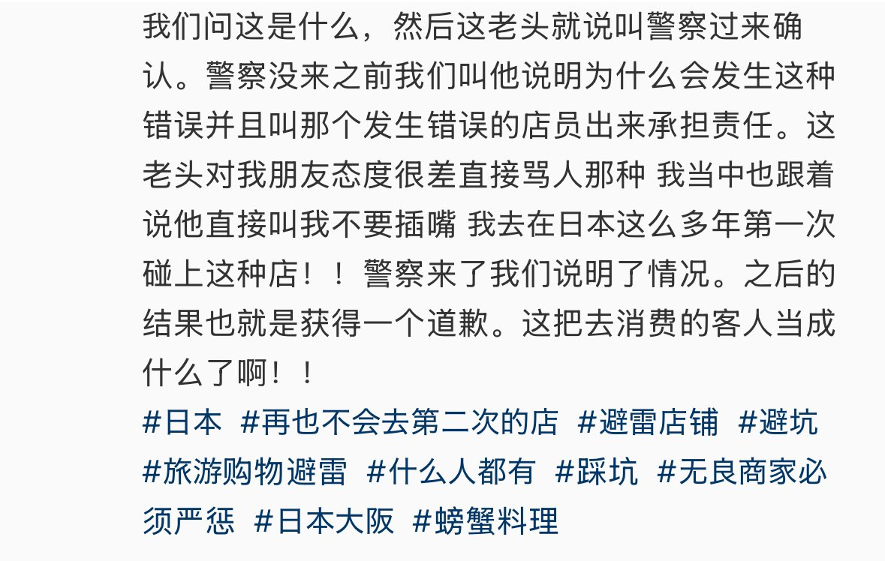

猫屎bot
@wind_dmr
@JapanBanZaiLove 我相信多输一个零，多算一份菜，有小费的餐厅多算百分之多少，不相信加五万这种整数是不小心的


のらいぬ
@JapanBanZaiLove
中国人在一家日本餐厅用餐
餐厅工作人员在结账时发生了失误，多算了5万日元，但是被及时发现。
中国客人把工作人员的失误当做“诈欺”和“故意”向餐厅讨要说法。
餐厅无奈报警…
中国人的沟通能力几乎为0
🤡🤡🤡 https://t.co/15fWdUFvSq